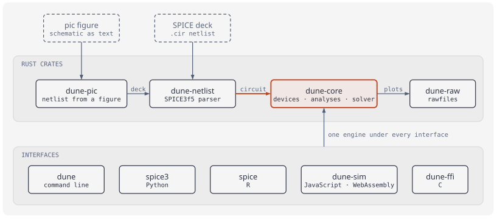
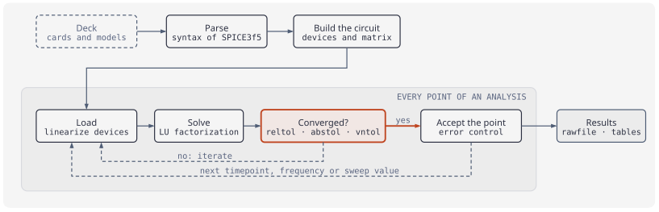

SPICE, reborn in Rust.
Dune is a faithful rewrite of Berkeley's SPICE3f5: the same netlists, devices and analyses — validated circuit by circuit against ngspice — with a clean engine you can call from Python, R, JavaScript or C. Where it departs from SPICE by default, it is measured to be closer to the converged answer, and one option (compat=spice3) restores SPICE's numbers.


One engine, every interface
A circuit arrives as a SPICE deck or as a schematic written in pic; one engine simulates it, whichever package you call it from — the same deck gives the same numbers in all of them.

dune-core is the only place where circuits are solved.
Faithful to the last ulp
SPICE3f5 is the contract; ngspice is the oracle. Nothing ships until the oracle agrees — at SPICE's own tolerances, not numbers invented to pass.
Byte-faithful netlists
The lexer and number parser mirror INPgetTok/INPevaluate token for token: 22 element letters, dot cards, hierarchical .subckt expansion with ngspice's names (r.x1.r1, x1.n1).
Oracle-tested, circuit by circuit
119 circuits — Berkeley's own decks included — run through Dune under compat=spice3 and compared point-by-point against pinned ngspice-47 goldens on every analysis, within reltol/abstol/vntol.
Divergence is documented
Where SPICE3f5 and ngspice disagree, Dune picks deliberately and writes it down: every entry in KNOWN_DIFFS has a measured gate that fails if the choice is reverted.
Hostile input never crashes
Malformed decks produce structured diagnostics with spans — never a panic, never an infinite loop. The parser is fuzzed in CI.
The real algorithms
Newton–Raphson with pnjlim junction limiting, gmin and source stepping, trapezoidal and Gear 1–6 integration with LTE control and breakpoints — ported from the C, not approximated. On top of them, by default: TR-BDF2 integration, switch and comparator events located in time, and transmission lines that keep the corners of their waves.
A clean engine inside
No global state, no unsafe outside the FFI crate, one type per device, a swappable linear-solver backend. The C's GENmodel maze stayed in 1993.
The whole SPICE3f5 surface
Every device and analysis of the Berkeley release, plus BSIM3v3 and S-parameters from modern ngspice.
Rawfiles come out in SPICE3's own binary and ASCII formats, so existing viewers read them unchanged. Transmission-line convolution, Volterra distortion kernels, adjoint noise analysis and pole-zero deflation are ports of the original algorithms, validated against the oracle.
Draw the circuit, get the netlist
Dune reads schematics written in rpic's pic language: label the elements, and the extractor derives connectivity, nets and a runnable deck — with diagnostics that point back to your source lines.
.PS
spice = 1
In: (0,1); Out: (2,1)
V1: vsource(In, (0,0), AC 1)
R1: resistor(In, Out, 1k)
C1: capacitor(Out, (2,0), 100n)
ground((0,0))
line from (0,0) to (2,0)
"In" above at In + (0,0.05)
"Out" above at Out + (0,0.05)
dot at In; dot at Out
.ac dec 20 10 100k
.PE* netlist extracted by dune-pic
V1 In 0 AC 1
R1 In Out 1k
C1 Out 0 100n
.ac dec 20 10 100k
.endThe same engine powers the Simulate panel in rpic Studio: draw a figure in the browser, run it, click a wire to probe its voltage, scrub through the transient — all client-side WebAssembly, no server.
Install & run
One engine, four front doors. The Python and R packages are first-class products, not CLI wrappers — the numbers always come from the same Rust core.
# Python — PyPI (polars DataFrames, zero-copy numpy)
$ pip install spice3
# JavaScript / WebAssembly — npm (runs in the browser)
$ npm install @strategicprojects/dune-sim
# R — tidy tibbles (CRAN submission planned)
> remotes::install_github("milkway/dune", subdir = "r")
# CLI — Homebrew (macOS, Linux)
$ brew install milkway/tap/dune
# CLI and Rust library — from source (Rust 1.88+)
$ git clone https://github.com/milkway/dune && cargo build --release# import spice — the module keeps the classic name
import spice
run = spice.simulate("""
step into a series rlc
V1 in 0 PULSE(0 1 0 1n 1n 1 2)
R1 in n1 60
L1 n1 out 1m
C1 out 0 1n
.tran 0.1u 40u
.end
""")
run.plots[0].frame() # polars DataFrame: time, v(in), v(out)…library(spice)
run <- spice_run("rlc.cir")
run # tidy tibble, one row per point
# or straight from a figure:
spice_pic("lowpass.pic") |> spice_run()Berkeley lineage, modern hygiene
SPICE has been free software since before the term existed. Dune keeps the license, the file formats and the semantics — and adds the engineering practices the original couldn't have.
CI with the oracle in the loop
fmt · clippy -D warnings · the full test suite · the 75-circuit oracle run · a wasm build — on every pull request and before every release, on x86-64 as well as arm64.
Trusted publishing
PyPI wheels and the npm package are published by CI through OIDC trusted publishing with signed provenance — no long-lived tokens anywhere.
Documented ports
Each device and analysis ships with notes on what was ported, what was rewritten and why — equations, parameter defaults and their SPICE3f5 names included.
| Component | License | Notes |
|---|---|---|
dune (all crates) | BSD-3-Clause | © 2026 André Leite; portions derived from SPICE3f5, © 1985–1991 The Regents of the University of California, and from ngspice-47. Upstream files and notices: NOTICE. |
SPICE3f5 sources in corpus/ | BSD-3-Clause | Berkeley's original C, kept verbatim as the reference the port is reviewed against. |
| ngspice-47 (oracle and source) | Modified BSD | By the ngspice team and contributors. The program is not redistributed — installed separately and pinned; Dune's test goldens are its outputs. BSIM3v3.3 (UC Berkeley BSIM Research Group), the .sp analysis (Alessio Cacciatori), the operating-point fallback chain (Alan Gillespie, Holger Vogt), .measure, .four (Wayne A. Christopher), the VDMOS power MOSFET (Holger Vogt, Dietmar Warning), the VBIC bipolar transistor (Colin McAndrew, Dietmar Warning), the transient noise sources and the ngspice revisions of several SPICE3f5 routines are translated from its sources. |
Dune is an independent project: it is not affiliated with, sponsored by or endorsed by the University of California, Berkeley, the UC Berkeley BSIM Research Group or the ngspice project. The names “SPICE”, “SPICE3” and “ngspice” are used only descriptively, to identify the programs whose netlist language and behaviour Dune implements.